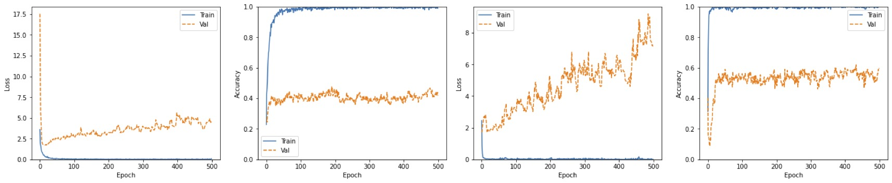
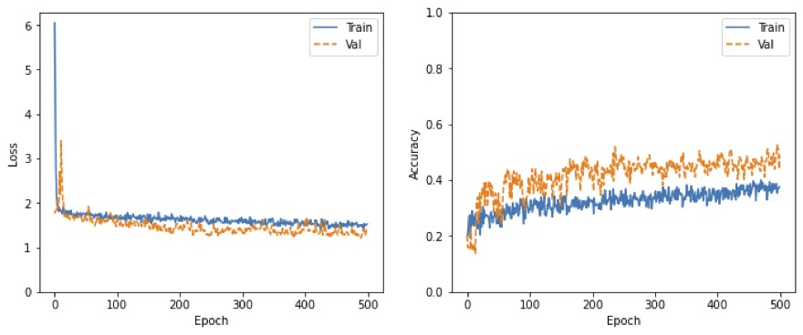
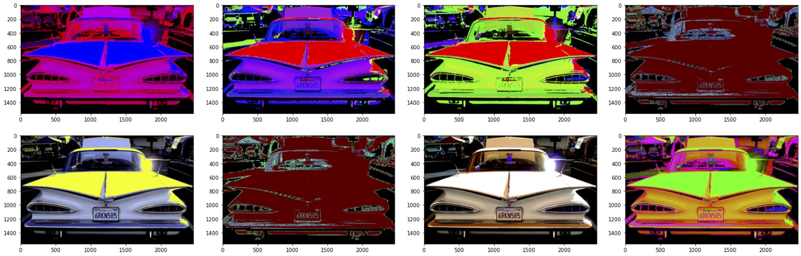
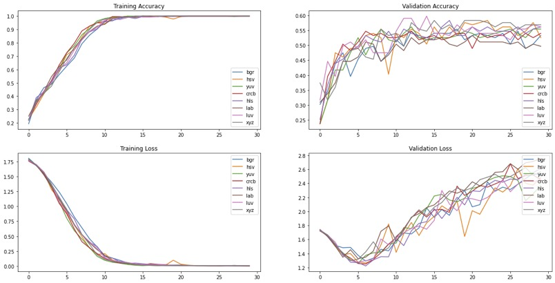

In the first part of this article I presented the results of the classical machine learning classifiers and introduced the convolutional neural network architecture. In this second part, let's take a look at different strategies to improve the accuracy of the model.
Before we go into the different techniques I tried to improve the acurracy, let's take a step back and go through a few basics.
While training a convolutional neural network myself, it can become overwhelming to keep track of all the number of decisions that need to be made and the what seems like almost infinite
possibilities to be explored. This is where pipelines come in handy to experiment with different scenarios. Let's take a quick look at the exploratory data analysis which inspired the pipeline plan.
Analysis:
• The
images are in different sizes
• The
image brightness is fairly random
• The
images may be slightly rotated
• The
images may not be facing straight
• The
images may not be exactly centred
• The
class are fairly equally distributed (most classes ~15% of overall dataset, one class 20% of overall dataset) and
consistent across training, validation and test data set
Visualization helps me to intuitively understand what I’m dealing with. Some ideas I explored here are: resize all images into the same shape, image augmentation to compensate for few training data samples, data normalization, experimentation with different color spaces
There are three main types of pixel scaling techniques supported by the Keras ImageDataGenerator class:
•Pixel Normalization: scale pixel values to the range 0-1.
•Pixel Centering: scale pixel values to have a zero mean.
•Pixel Standardization: scale pixel values to have a zero mean and unit variance.
The pixel standardization is supported at two levels: either per-image (called sample-wise) or per-dataset (called feature-wise). Specifically, the mean and/or mean and standard deviation statistics required to standardize pixel values can be calculated from the pixel values in each image only (sample-wise) or across the entire training dataset (feature-wise).

Feature-wise normalization (left) implies the following:
- featurewise_center: set input mean to 0 over the dataset.
- featurewise_std_normalization: divide inputs by std of the dataset.
The results are a bit disappointing. I was expecting normalization to have a big effect, but the improvement is minimal.
Sample-wise normalization (right) implies the following:
- samplewise_center: set each sample mean to 0.
- samplewise_std_normalization: divide each input by its std.
Sample-wise normalization shows a bit better score (but higher loss) than the feature-wise normalization, but same as the feature-wise normalization not a significant improvement. And the model is still overfitting.
One missing ingredient required in modern convolutional neural networks is data augmentation. The human vision system is excellent at adapting to image translations, rotations and other forms of distortions. Take an image and flip it anyway, most people can still recognize it. However, CNNs are not very good at handling such distortions, they could fail terribly due to minor translations. They key to resolving this is to randomly distort the training images, using horizontal flipping, vertical flipping, rotation, zooming, shifting and other distortions. This would enable CNNs to learn how to handle these distortions, hence, they would be able to work well in the real world. For small datasets, data augmentation is used as a way to introduce variance and provide the classifier with a better sense of the world.
The performance with the augmentation is actually worse than without it. Moreover:
• the network is not robust to these changes.
• the training requires more epochs (it takes more time to train with larger data, and the network does not converge even after 500 epochs).

Still, I was not ready to abandon this path just yet.
Being able to handle distortion is a nice feature, but it isn't enough since our augmented samples are still highly correlated. So, I’ve used additional transformations like converting the color of an image from one color space to another to supplement our data while adding healthy variance.
 I've enjoyed this part very much, especially since it was the first time I've used color space transformations. After some research, I decided to use BGR, HSV, YUV, CrCb, HLS, Lab, Luv, XYZ.
My aim here was not to create a very high-tech state of the art CNN architecture to get the best accuracy but to compare the color spaces.
The results were surprising. I was expecting some color transformations to be more efficient as many images are more about shapes and less about colors. Also, I was thinking that the colors in cars are more saturated than that of backgrounds (i.e., trees), and the color space like HSV and HLS might contribute to superior performance. This was not the case.
The results are generally quite similar. XYZ colorspace gives slightly better results while HSV gives slightly poorer results. Why did this happen? Maybe because XYZ is pretty similar to RGB, whereas HSV is a cylindrical system and is the farthest off RGB in terms of similarity, hence gave the worst results.
So far I’ve explored the hypothesis that by augmenting our
dataset, we allow our model to learn more robust and generalizable features and
produce more accurate classifications than our previous model. But there
are also ways to improve the performance of our model by fine-tuning the model
itself. Tuning hyperparameters for deep neural network can
be difficult as it can be slow to train a deep neural network and there are
numerous parameters to configure. The most commonly used recipes are:
- Dropout is a simple technique that will randomly drop nodes
out of the network, forcing the remaining nodes to adapt and pick-up the slack
of the removed nodes. In a way, it prevents a layer from seeing twice the exact
same pattern.
- During training, there will be a point when the model will
stop generalizing and start learning the statistical noise in the training dataset. Early stopping refers
stopping the training process before the learner passes that point.
- Weight
Decay tries to incentivize the network to use smaller
weights by adding a penalty to the loss function.
But the list goes on and on (and this is by no means an exhaustive list): the number
of convolutional layers and filters, the number
of fully connected (dense) layers and neurons, the number
of epochs, the batch
size, the learning
rate, using dropout
and increasing dropout, batch
normalization, different
activations, different
optimizers and much more.
As I experimented with more and more ideas, it became harder and harder
for me to remember what I had tried.
What changes made the network better or worse? I was inspired by this post to use a mind map to keep track of the important things I tried.
I probably tried more than 15 different network architectures, with different network depths and different filter sizes, and learning rates. I got the the best results by using a very high filter size 11x11 (probably because since the pictures are mostly well centered, a big number of pixels is necessary
for the network recognize the object) and a very low learning rate. After 1000 epochs and 25 hours later, I decided to stop the training. It seems to the right path, but the network could still learn and could take advantage of more training to reach convergence.
created with
Static Site Generator .